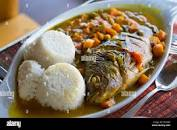

Odin Recipes

DESCRIPTION
Apart from Rolex, this is the most stable food in uganda.
There is no traditional function where this dish isn't served
INGREDIENTS
- Fresh fish
- spices like fish masala
- small onion, diced
- Tomato, onions, garlic cooking oil, tea spoon salt
- Carrot, and green paper
STEPS
- There are various cooking methods for fish, including baking, grilling, frying, steaming, or broiling.
The cooking time and temperature will vary depending on the type and thickness of the fish.
Follow a specific recipe or cooking guidelines for the desired method to ensure proper cooking.
- Checking for doneness: Fish is cooked when it becomes opaque, flakes easily with a fork,
and reaches an internal temperature of 145°F (63°C).
Avoid overcooking as it can make the fish dry and less flavorful.
More Recipes